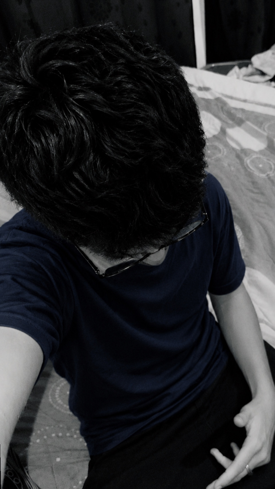

01 — INTERESES
Lo que me gusta
La programación, la tecnología, crear proyectos, el gimnasio y descubrir cosas nuevas.
↗
“Intentando ser mejor que antes, no mejor que nadie”. Este es mi espacio, donde comparto quién soy, lo que me inspira y lo que estoy construyendo.
DESLIZA PARA CONOCERMETengo 15 años y estudio en el CECyT 12 del Instituto Politécnico Nacional. Este espacio reúne mis intereses, ideas y metas.
Soy estudiante del Politécnico, CECyT 12. Me gusta crear proyectos, la programación, aprender cosas nuevas y superarme.
Me interesa la tecnología y disfruto convertir ideas en proyectos. Quiero seguir aprendiendo, desarrollar mis habilidades y construir cosas de las que pueda sentirme orgulloso.
Me considero una persona reservada, leal y perseverante. Mi frase favorita es: “Todo pasa por algo”.
CONOCE MI ESENCIA ↗Mis intereses, mi forma de ver las cosas y esos pequeños detalles que hacen que mi mundo sea mío.
La programación, la tecnología, crear proyectos, el gimnasio y descubrir cosas nuevas.
Reservado, leal y perseverante. Prefiero demostrar quién soy con mis acciones.
Aprender de cada experiencia, mejorar constantemente y avanzar a mi propio ritmo.
La música que escucho, las historias que me gustan y las cosas que disfruto hacer en mi tiempo libre.
Reggaetón, corridos, hip hop y rap. Entre mis artistas favoritos están Calle 24 y Fuerza Regida.
Amarte Duele y Tres metros sobre el cielo son dos películas que me gustan.
GTA, Free Fire, Roblox y Minecraft.
Programación, gimnasio y crear páginas web. Me gusta aprender y convertir ideas en proyectos.
También me gusta compartir momentos con mi novia, una persona importante en mi vida.
Hay personas que hacen que ciertos momentos tengan un significado especial. Aquí tendrán su propio espacio.
Nuestra amistad comenzó en segundo de secundaria y, desde entonces, nos hemos vuelto muy unidos. Hemos compartido etapas, conversaciones y momentos que hacen especial nuestra historia. Valoro la confianza y el apoyo de tener a un amigo con quien puedo contar. Ojalá sigamos sumando recuerdos y acompañándonos en todo lo que viene.
Cecilia es una persona muy especial para mí y me alegra tenerla en mi vida. Disfruto compartir con ella conversaciones, sonrisas y momentos que hacen más bonitos mis días. Aprecio el cariño, la confianza y todo lo que vamos construyendo juntos. Este espacio guarda un pedacito de nuestra historia y de los recuerdos que quiero conservar con mucho cariño.
La primera foto de mi galería: un retrato mío que forma parte de este pequeño recorrido por mi mundo. Más adelante podré sumar otros recuerdos.

Alexis · Mi mundoTengo cosas por aprender, objetivos por cumplir y muchas experiencias por vivir. Esta página también crecerá conmigo: será un registro de lo que soy hoy y de todo lo que voy construyendo.